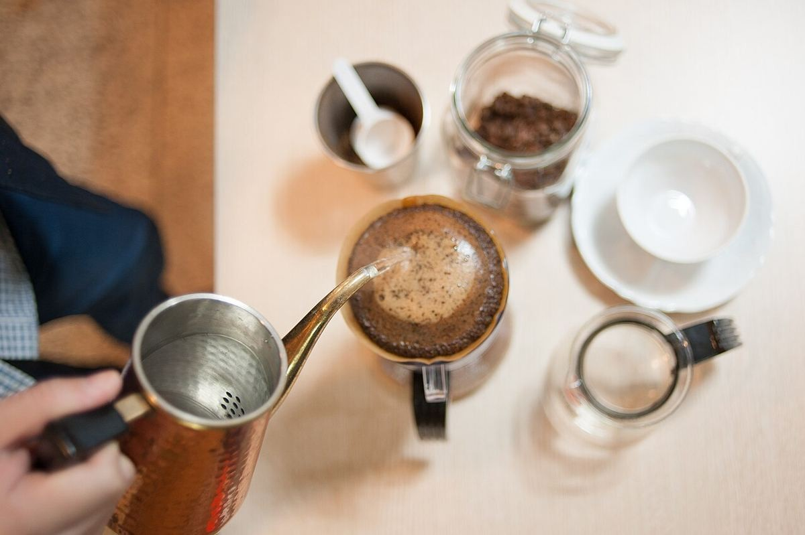
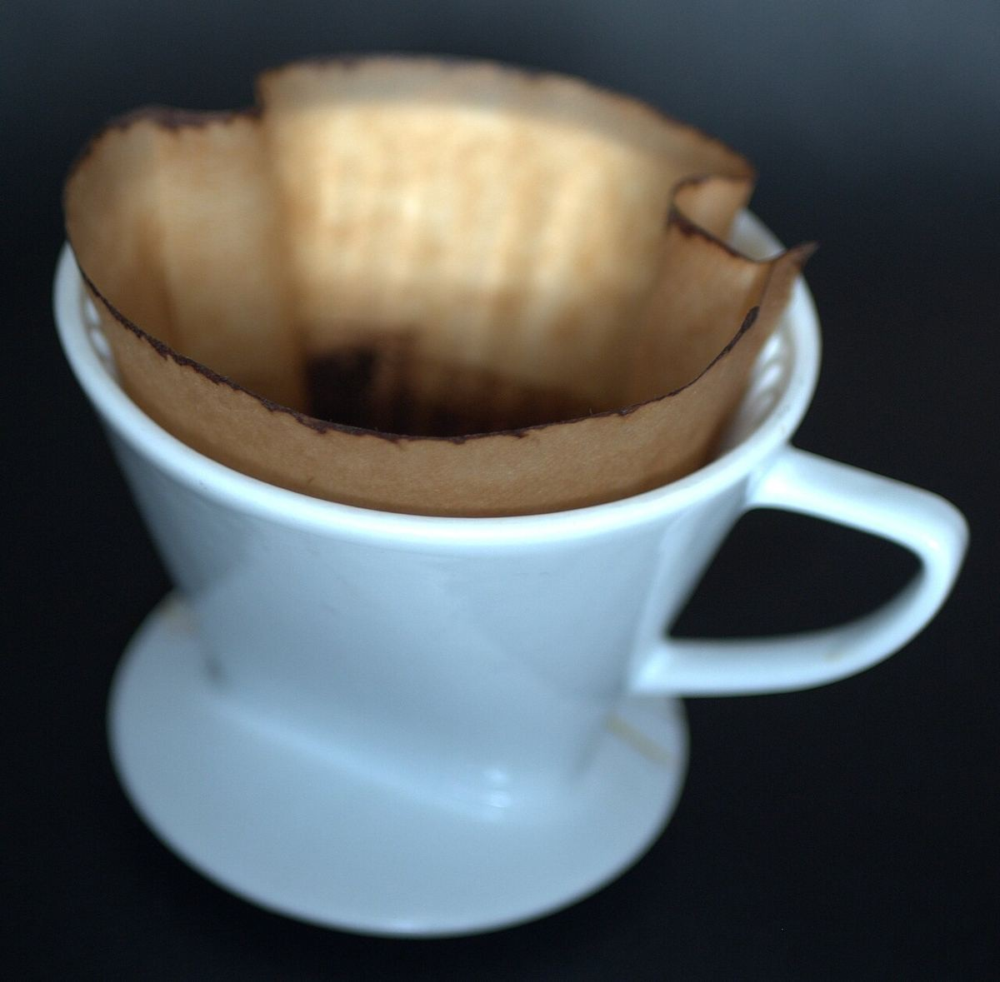
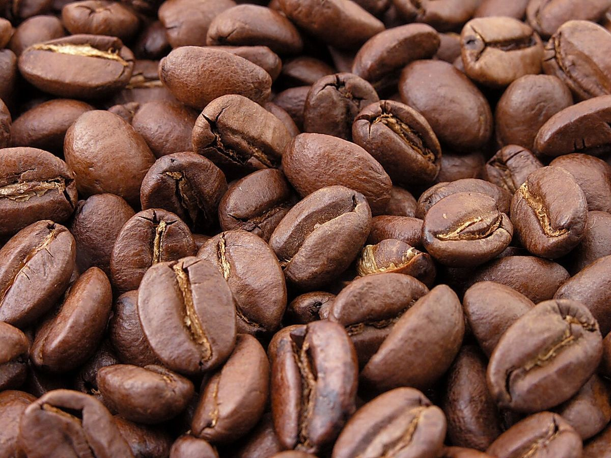

メニュー
メニューは現在準備中です。内容が決まり次第、このページに掲載します。
- 提供内容
- 準備中(お問い合わせください)
- 価格
- 準備中(お問い合わせください)
- 営業時間
- 準備中(お問い合わせください)
イメージ写真
これらは雰囲気を伝えるフリー素材で、お店のメニューではありません。



掲載している写真はフリー素材のイメージです。お店の実際の写真ではなく、他の地域で撮影されたものや、撮影地が不明なものを含みます。
メニューは現在準備中です。内容が決まり次第、このページに掲載します。
これらは雰囲気を伝えるフリー素材で、お店のメニューではありません。


